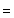
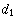

Two circles may intersect in two
imaginary points, a single degenerate point, or two distinct points.
The intersections of two circles determine a line known as the radical line. If three circles mutually intersect in a single
point, their point of intersection is the intersection of their pairwise radical
lines, known as the radical center.
Let two circles of radii and  and centered at
and and centered at
and  intersect in a region shaped like an asymmetric lens. The equations of the two circles are intersect in a region shaped like an asymmetric lens. The equations of the two circles are
Combining (1) and (2)
gives
Multiplying through and rearranging gives
Solving for  results in results in
The chord connecting the cusps of the lens therefore has half-length  given by plugging
back in to obtain given by plugging
back in to obtain
|  | |
(6)
| |  | |
(7)
|
Solving for and plugging back in to give
the entire chord length then gives
This same formulation applies directly to the sphere-sphere intersection problem.
To find the area of the asymmetric "lens" in which the circles intersect,
simply use the formula for the circular
segment of radius and triangular
height
twice, one for each half of the "lens."
Noting that the heights of the two segment triangles are
|  |  | |
(11)
| |  | |
(12)
|
The result is
The limiting cases of this expression can be checked to give 0 when and
when , as expected.
In order for half the area of two unit disks () to overlap, set in the above equation
and solve numerically, yielding
(Sloane's A133741).
If three symmetrically placed equal circles intersect in a single point, as illustrated above, the total area of the three lens-shaped
regions formed by the pairwise intersection of circles is given by
Similarly, the total area of the four lens-shaped regions formed by the pairwise intersection of circles is given by

Sloane, N. J. A. Sequence A133741 in "The On-Line Encyclopedia of Integer Sequences."
|